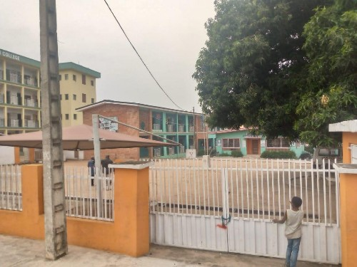
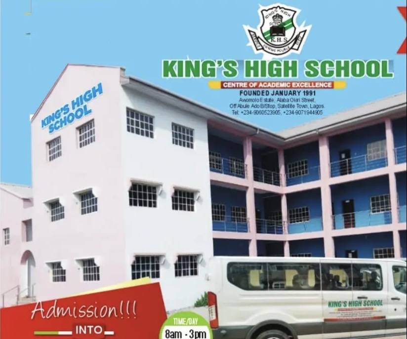
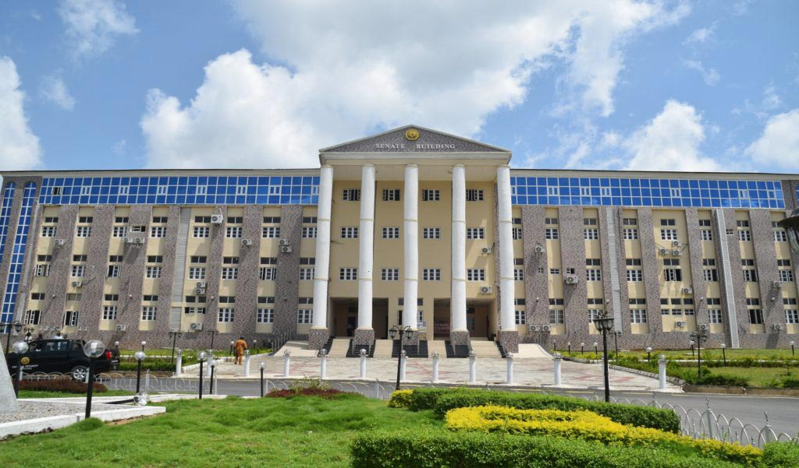

My School Journey

The Beginning
St. Margaret Nursery & Primary School
This is where I first became curious. From learning simple maths to using a computer in class for the first time, St. Margaret gave me the base for everything that came next.
Growth
King's High School
During my time at King's High, I became more interested in computers. I started enjoying anything related to computer systems and spent more time learning how they work. My interest kept growing as I continued to go deeper into computer science.


Final Frontier
Adeleke University
Currently in my final year of Computer Science. Here, I've mastered Software Engineering principles, worked with Flutter for mobile apps, and I'm currently finalizing my e-SIWES Logbook project.